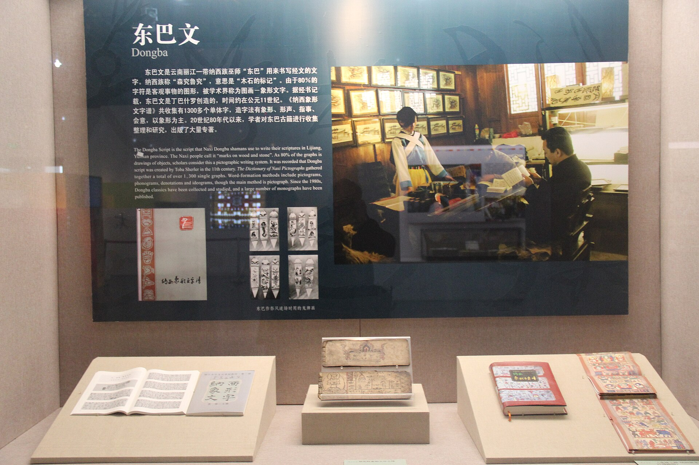
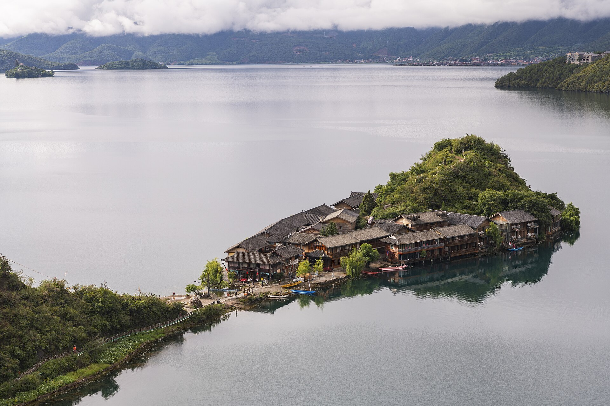
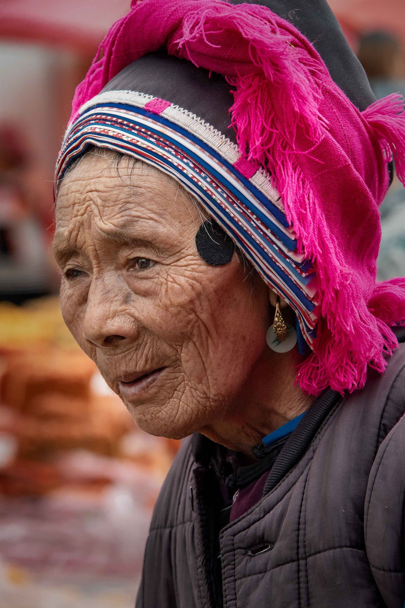
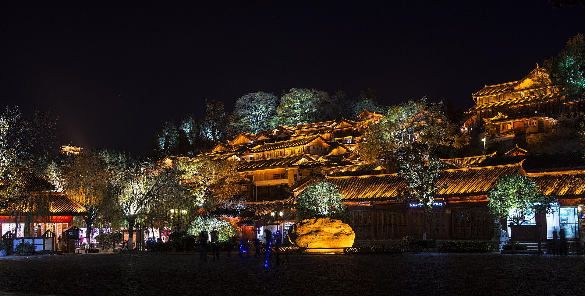
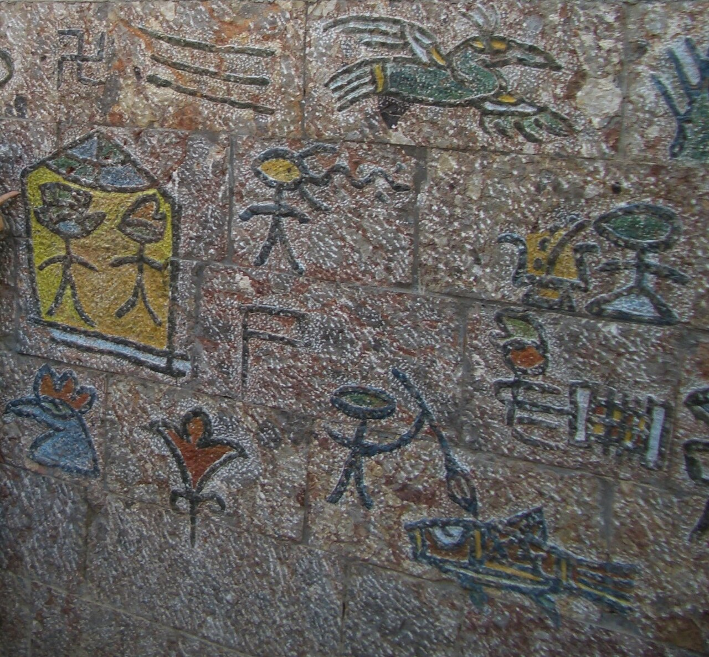

是一个策展层
权威数字资源散落在国会图书馆、国家图书馆、识典古籍、非遗网等数十个平台。本馆做的是整理、翻译与可视化——为公众修一条抵达它们的路。
丽江是云南西北部一座以纳西族文化为旗舰的城市，却远不只是「纳西族的丽江」：按第七次全国人口普查，彝族（24.07 万）已超过纳西族（23.12 万）成为境内第一大少数民族；傈僳族人口接近白族的两倍；而占全国普米族总人口约 43% 的普米族群，聚居于宁蒗的群山之间。一城五族、共生互鉴，是这座「三遗产之城」最深的底色。





注：普米族卡片曾以文字为设计——开放影像库中普米影像曾几近空白，2026-11 复检已觅得两帧（详见 普米馆）。



「古城丽江，把经济和战略重地与崎岖的地势巧妙地融合在一起，真实、完美地保存和再现了古朴的风貌。古城的建筑历经数个世纪的洗礼，融汇了各个民族的文化特色而声名远扬。」
东巴文，纳西语称「森究鲁究」——木石上的痕记，约产生于公元 11 世纪以前，被《光明日报》称为「世界上至今唯一活着的象形文字」。字符数各口径约 1400—2000 个。2003 年，以它书写的东巴古籍文献入选联合国教科文组织《世界记忆名录》。
如今，这批古籍约 3 万册散藏于全球十余个国家的图书馆与研究机构——本馆的东巴文献全球流散地图，把它们重新画在了一张图上。




蒙古大军经巨甸、塔城、宝山一带革囊渡江，纳西首领麦良归附，此后任茶罕章管民官——丽江纳入元帝国版图。
丽江首领阿甲阿得率众归明，获赐汉姓「木」、授丽江府土知府。木氏家族自元代归附起世袭统治丽江，至 1723 年改土归流，历元明清三代约 470 年。
应木增之邀驻足解脱林，留下对木府的千古一叹——「宫室之丽，拟于王者」。
大震之后整座古城重生，成为中国以整座古城列入世界文化遗产的头两例之一。
考察丽江古城，强调保护传承中华优秀传统文化——民族文化数字化的政策窗口正在打开。